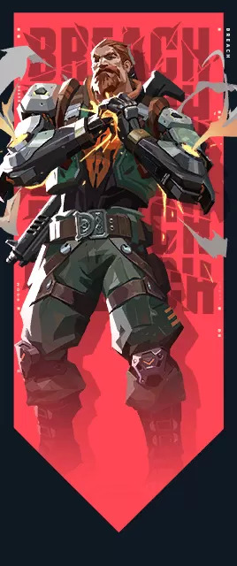

- Passive : Stars / Astral Form
- Place Stars in Astral Form with FIRE. Stars can be reactivated later, transforming them into a Nova Pulse, Nebula, or Gravity Well.
Default Keybind : X(PC)
Uses : 5
Cost : 150
Cooldown : 25 s (after using Dissipate)
ACTIVATE ULTIMATE to ENTER Astral Form. FIRE to cast Stars. INTERACT to recall a Star. Recalling a Star forms a brief smoke.
Default Keybind : X(PC)
- Principal Ability : Nebula / Dissipate
- ACTIVATE a Star to transform it into a smoke.
Default Keybind : E(PC)
Uses : 2
Duration : 14.25 s (Nebula)/1 s (Dissipate)
Cooldown : 35 s (Nebula)
- Second Ability : Nova Pulse
- ACTIVATE a Star to detonate it, concussing all players hit.
Default Keybind : Q(PC)
Uses : 1
Windup : 1 s
Cooldown : 60 s
Debuff : 2.5 s Concuss
- Third Ability : Gravity Well
- ACTIVATE a Star to create a zone that pulls all players to the center, exploding and applying vulnerable to all players.
Default Keybind : C(PC)
Uses : 1
Windup : 1.25 s
Duration : 2 s
Cooldown : 60 s
Debuff : 2.5 s Vulnerable
- Ultimate : Cosmic Divide
- ENTER Astral Form. ALT FIRE to EQUIP Cosmic Divide. FIRE to set, pivot and FIRE again to create an indestructible wall that blocks audio.
Default Keybind : X(PC)
Ultimate Points : 7 ♦♦♦♦♦♦♦
Duration : 21 s (effective total duration)